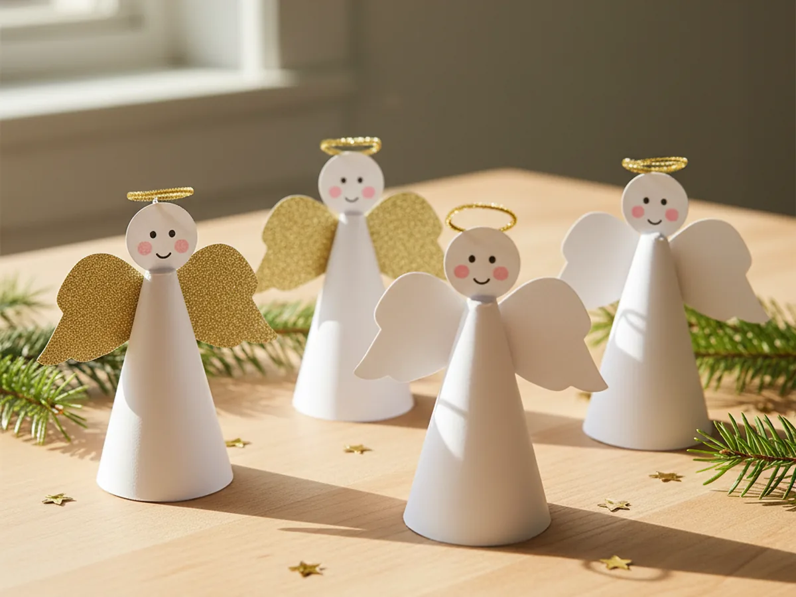
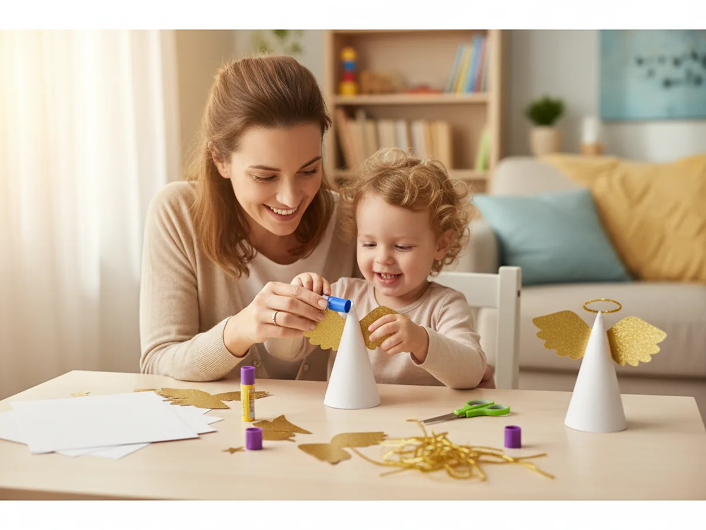
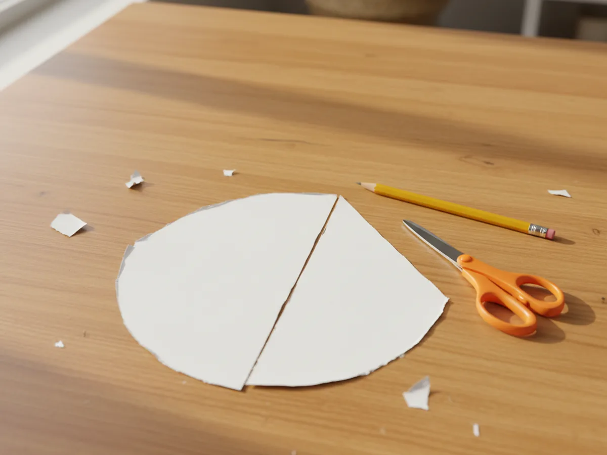
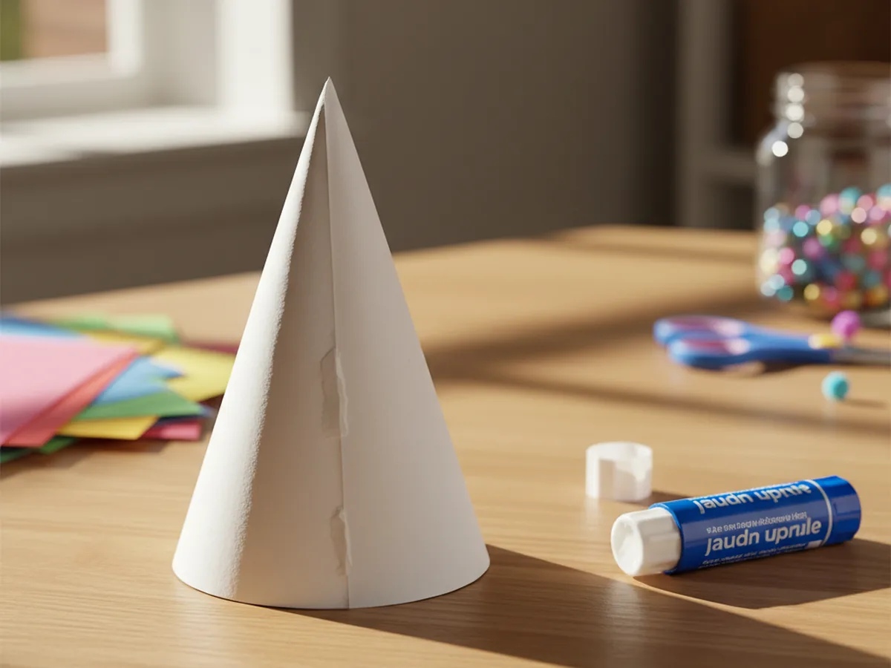
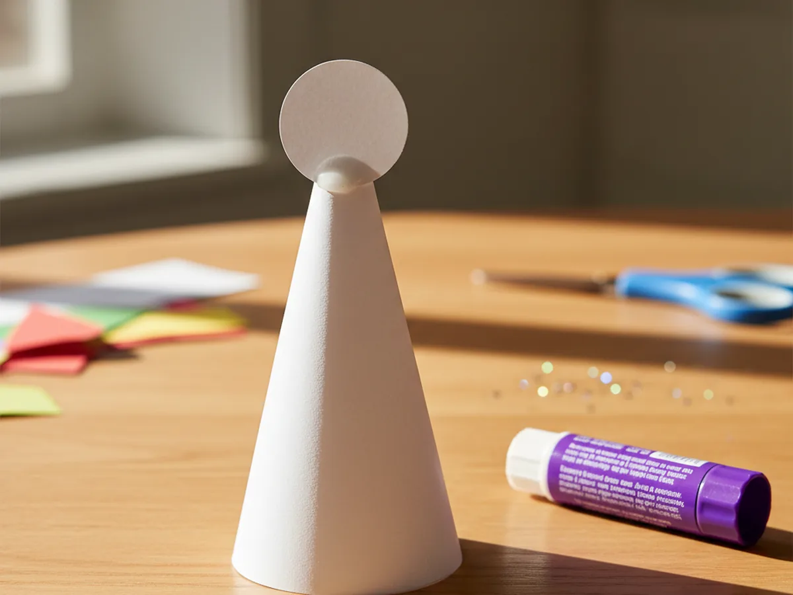
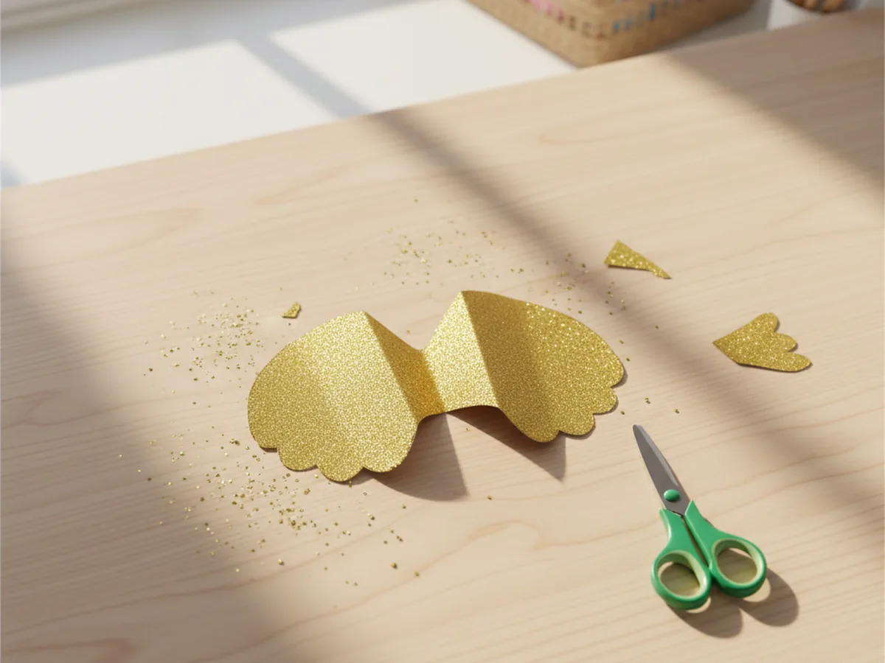
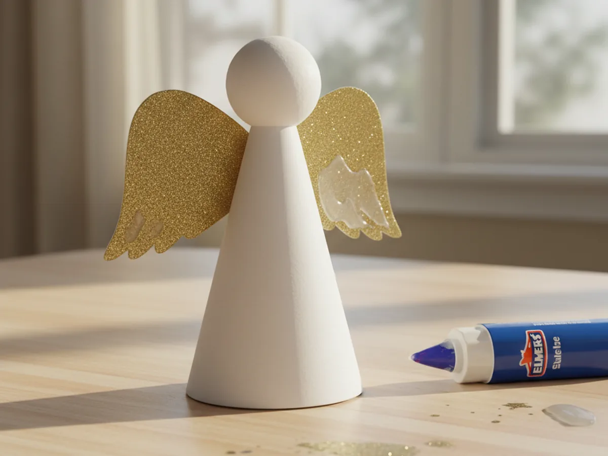
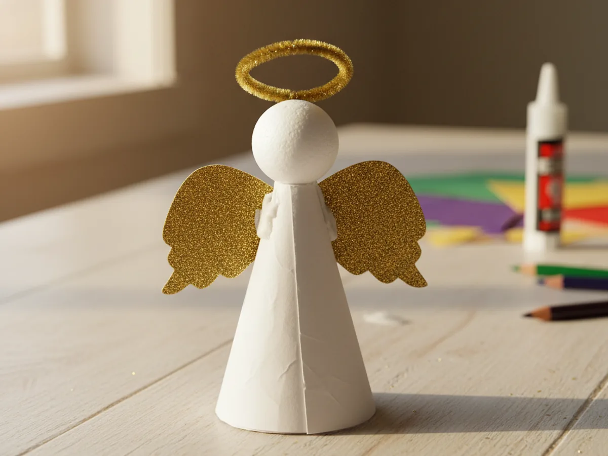
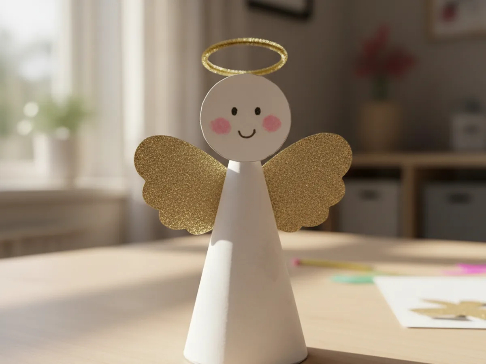

This sweet paper angels craft is one of those magical little projects where you blink and your child has built something they want to put on display. You cut a paper cone, stick on a tiny round head, glue on a pair of wings, and add a glittery halo. That is honestly the entire craft. It works beautifully as a Christmas decoration, a card topper, or a quiet rainy afternoon activity, and the finished angel looks just lovely standing on a shelf. 👼
This tutorial is designed for kids age 4 and up working with a mom or caregiver. Younger children can help with the gluing, the halo, and decorating the face. Older kids can handle most of the cutting on their own. Either way, you both end up with a small, charming angel and a happy moment shared at the craft table.
Why Kids Love This Craft
There is something genuinely exciting about watching a flat piece of paper turn into a standing, three-dimensional angel right in front of you. The moment the cone snaps into shape and the head goes on top, kids almost always smile. It feels a little like building a tiny doll from scratch, and that sense of bringing a character to life is what makes this paper angels craft so satisfying for young children.
The decorating stage is where the personality really shines through. Each angel ends up looking different depending on who made it. Some have huge sparkly wings, some have tiny eyes, some have wild hair, and some get an enormous gold halo that takes up half the head. There is no wrong way to make an angel, and your child quickly figures out that they are in charge of how their little angel looks.
This craft also quietly builds plenty of useful skills. Rolling the cone helps with hand coordination, cutting the wings supports scissor practice, and bending the pipe cleaner halo is great fine motor work for little fingers. The whole project is about 30 minutes from start to finish, the mess stays low, and you finish with a sweet display piece that feels special. That combination is exactly what makes a craft worth saying yes to on a busy afternoon.

What You'll Need
Here is everything you need to make your paper angels craft at home, with most of the supplies probably already in your craft drawer.
- Pacon White Cardstock, sturdy enough to hold the cone shape without flopping over
- Gold glitter cardstock, perfect for sparkly wings or a shiny halo
- Gold pipe cleaners, soft and bendy for shaping the halo in seconds
- Elmer's Disappearing Purple Glue Sticks, easy for little hands and dries clear
- Fiskars Training Scissors, blunt-tip safety scissors perfect for kids age 4 and up
- Crayola Washable Markers, for drawing the sweet little face and hair
- A pencil, optional for tracing the cone shape before cutting
- Clear tape, for holding the cone seam quickly while the glue dries
Step-by-Step Instructions
Take it one calm step at a time and you will have your first angel in no time. Let your child join in at every stage, even if it is just pressing the wings flat.
Step 1: Cut a Quarter-Circle for the Body
Start with a piece of white cardstock and cut out a large quarter-circle, which will become the cone body of your paper angels craft. The easiest way is to fold the cardstock into quarters, then round the outer corner with scissors so you end up with one quarter of a circle when you unfold one section. Aim for something roughly 6 to 7 inches along each straight edge. Do not stress about getting a perfectly smooth curve. A slightly wobbly curve gives the finished angel a soft handmade feel that looks very sweet.

Step 2: Roll the Quarter-Circle into a Cone
This is the part kids love most. Take your quarter-circle and gently curl one straight edge over the other, sliding them until you form a cone with a pointed top and an open bottom. The wider the overlap, the narrower and taller the cone will be. Once you like the shape, run the glue stick along the inside of the overlapping edge and press it firmly closed. Hold the seam for about ten seconds, or use a small piece of tape on the inside to lock the cone together while the glue sets. You should now have a sturdy little body that stands up on its own.

Step 3: Cut and Attach the Head
Cut a small white circle from your cardstock for the angel's head, roughly the size of a large coin or about 1.25 inches across. Trace around a bottle cap or a small jar lid if you want a perfect circle. Apply a generous dab of glue to the back of the circle, then press it firmly onto the very tip of the cone, centered so it stands up like a little head looking forward. Hold it in place for a few seconds. The cone now suddenly looks like an angel, and most kids will gasp at this exact moment. ✨

Step 4: Cut a Pair of Wings
Now for the prettiest part of the paper angels craft. Fold a piece of gold glitter cardstock in half and cut a soft curved shape that looks a bit like half of a heart against the fold. When you unfold it, you have a pair of symmetrical wings joined in the middle. Aim for wings about 4 to 5 inches across in total, which will look balanced against the cone body. If you do not have gold glitter cardstock, plain white cardstock works beautifully too and gives the angel a soft, classic look.

Step 5: Glue the Wings to the Back
Apply a thick line of glue down the center fold of the wings and press them firmly onto the back of the cone body, just below the head. Hold them in place for about fifteen seconds so the glue grabs. The wings should peek out evenly on both sides and tilt up just a touch, like the angel is about to flutter off the table. If they slide while you are holding them, do not worry, just nudge them gently into place before the glue fully sets. This step instantly makes your paper angel craft feel finished, even before the halo goes on.

Step 6: Add a Gold Halo
Cut a piece of gold pipe cleaner about 4 inches long and bend it into a small circle, twisting the ends together to lock the loop closed. Leave a short straight tail sticking down from the loop, which will be your anchor point. Press a small dab of glue onto the top of the angel's head, then push the tail of the halo into the glue so the gold loop floats just above the head. Hold it for several seconds until it stays. A small piece of clear tape on the back of the head can also help if the halo wobbles.

Step 7: Draw the Sweet Face
The finishing touch is the face, and this is where every angel becomes truly special. Use washable markers to draw two small dot eyes, soft pink cheeks, and a tiny smile on the white circle head. Your child can also add a little hair across the top of the head, or even draw closed eyes for a peaceful sleeping angel. Resist the urge to take over here. Whatever your child draws is exactly the right face for their paper angels craft. Lift the finished angel up together, give it a little admiring tilt, and put it somewhere everyone in the house will see it. 💛

Variations to Try
Doily Dress Angel: Swap the plain white cardstock cone for a paper doily folded into a cone shape. The lacy edges instantly turn the angel into a fancier, more detailed-looking craft. Perfect for slightly older kids who want something with extra texture.
Mini Christmas Tree Angel Topper: Skip the halo and add a small loop of thread to the back of the angel so it can sit on top of a Christmas tree branch. Make a few in different sizes and turn the project into a little angel choir for the whole tree.
Painted Wing Angel: Instead of cutting glitter cardstock for the wings, let your child paint or marker-decorate plain white wings with rainbow stripes, dots, or sparkly stickers. This version is wonderful for kids who love color over sparkle.
Final Thoughts
A paper angels craft is one of those projects that feels small but stays with everyone afterward. The angel ends up on the windowsill, the bookshelf, or the top of a bedroom door, and every time you walk past it you remember the quiet half hour you spent making it together. That is the real magic of this craft. It is not about a perfect finished angel. It is about your child looking up at you, holding their tiny creation, and feeling proud. Happy crafting to you both.
More Crafts You'll Love
If your family enjoyed this little angel, here are two more festive paper crafts to try next.